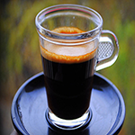
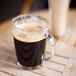
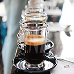

25-60-60")
Кофе Лунго
Лунго — одна из разновидностей эспрессо. Кофе готовится тем же способом, но с увеличенным количеством воды, благодаря большей длительности пролива. На вкус лунго отличается большей горькостью, но меньшей крепостью, чем эспрессо. Для его приготовления больше всего подходит кофе из сортов с тонким ароматом и нежным вкусовым букетом.
С итальянского название «лунго» переводится как «длинный». Этот напиток готовится при помощи эспрессо-машины также как и эспрессо, но с гораздо большим количеством воды (обычно воды в два раза больше), в результате чего получается «растянутый» эспрессо-лунго.
  Кофе лунго не стоит путать с американо, который являет собой обыкновенный эспрессо, но с добавлением горячей воды или же, при приготовлении другим способом, — горячую воду, в которую вливают эспрессо. При приготовлении лунго вся вода проходит через молотый кофе, а объем лунго обыкновенно меньше, чем объем американо.
Лунго менее крепкий, но более горький, из-за большего количества горячей воды, которая проходит сквозь молотый кофе и экстрагирует компоненты, которые обыкновенно не экстрагируются при приготовлении эспрессо. Чем больше воды проходит сквозь молотый кофе, тем более горький вкус кофе. При использовании минимума воды получается более крепкий, богатый напиток, известный под названием ристретто. При увеличении или уменьшении количества воды при приготовлении эспрессо, изменяется и вкус и структура напитка, потому что не все компоненты вкуса и запаха раскрываются в одинаковых условиях. По этой причине, ристретто и лунго не будут местить одинаковых компонентов. Поэтому ристретто не является просто в два раза крепче обычного эспрессо, а лунго не просто в два раза слабее него. Больше того, хотя эспрессо готовится под давлением, вкус лунго отличается от вкуса кофе, приготовленного другими способами, даже если готовить его на том же молотом кофе и с тем же соотношением кофе и воды.